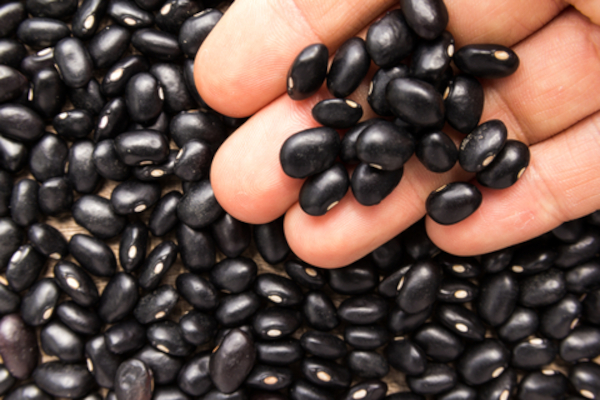
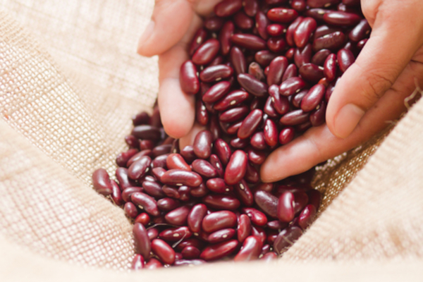

Frijol Negro
| Variedad: | Frijol INTA-Cardenas (Nicaragua) |
| Color Grano: | Negro Opaco semibrillantes |
| Días de floración: | 38 a 42 días después de la siembra |
| Color de la Flor: | Morado |
| Número de vainas por planta: | 18 a 25 |
| Madurez fisiológica: | 74 a 76 días después de la siembra |
| Días a cosecha: | 80 a 84 dís después de la siembra |
| Habito de crecimiento: | Arbustivo con guia corta larga |
| Rendimiento por manzana: | 22 a 24 quintales |
| Peso de 100 Semillas: | 20 a 22 gramos |

Café Arábigo
| Variedad: | 100% Arábica |
| Crecimiento: | Altitud entre 1,100 y 1,600 metros sobre le nivel del mar |
| Epoca de cosecha: | Entre Octubre y Marzo |
| Proceso de Fresado: | lavada y secada al sol |
| Aroma: | dulce, chocolate, levemente ácido |
| Cuerpo: | suave |
| Acidez: | brillante y cítrico |
Frijol Rojo
| Variedad: | Frijol INTA ROJO (Nicaragua) |
| Color Grano: | Rojo Brillante |
| Días de floración: | 33 a 35 días después de la siembra |
| Número de vainas por planta: | 18 a 25 |
| Madurez fisiológica: | 63 a 65 días después de la siembra |
| Días a cosecha: | 75 a 78 dís después de la siembra |
| Habito de crecimiento: | Arbustivo con guia corta |
